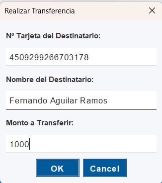
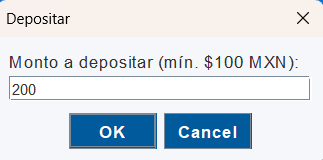
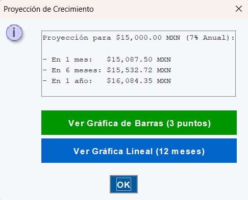

Al iniciar la aplicación, serás recibido por la pantalla de bienvenida. Esta es la primera ventana que verás y te ofrece las opciones principales para comenzar a operar.
Para Registrar un Nuevo Cliente:
Al pulsar "Registrarse", aparecerá el siguiente formulario donde deberás completar tus datos para crear tu perfil de forma segura.
Para Iniciar Sesión:
Si eliges "Iniciar Sesión", se te dirigirá a la pantalla de acceso. Aquí debes introducir tu número de tarjeta y contraseña.
Al ingresar tus datos correctamente, recibirás un mensaje de bienvenida y podrás comenzar a operar.
Una vez que inicies sesión, accederás a tu panel principal. Esta pantalla está diseñada para darte un control total sobre tu cuenta de forma clara y sencilla.

En la parte superior, verás un resumen con tu nombre de cliente, tu saldo principal y tu saldo ahorrado.
Debajo, encontrarás el menú de acciones con botones para todas las operaciones disponibles:
- Realizar Depósito — Añade fondos a tu cuenta principal.
- Retirar Monto — Saca dinero de tu cuenta principal.
- Transferir — Envía dinero a la cuenta de otro cliente.
- Historial — Consulta tus transacciones pasadas.
- Caja de Inversión — Gestiona tus ahorros y ve proyecciones de crecimiento.
Finalmente, en la parte inferior, tienes el botón para Cerrar Sesión de forma segura.
Realiza tus operaciones diarias de forma sencilla. El sistema te guiará en cada paso y actualizará tu saldo automáticamente.
La moneda utilizada en todas las transacciones es el Peso Mexicano (MXN).
Cómo Realizar un Depósito:
Al hacer clic en "Realizar Depósito", se abrirá una ventana emergente para que ingreses el monto. Tras confirmar, recibirás una notificación de éxito.
Cómo Realizar un Retiro:
Al seleccionar "Retirar Monto", aparecerá una ventana similar para introducir la cantidad. Si tienes fondos suficientes, la operación se completará y verás un mensaje de confirmación.
Para transferir fondos a otra cuenta, el sistema te pedirá tres datos clave para garantizar la máxima seguridad en la transacción. Tras rellenar los datos, recibirás una confirmación.
Al hacer clic en el botón "Historial", el sistema te preguntará cómo deseas visualizar tus transacciones.
Orden Cronológico: Esta opción te mostrará una lista de todos tus movimientos, comenzando por el más reciente.
Ordenar por Monto: Esta vista utiliza un Árbol Binario para ordenar eficientemente tus transacciones, mostrando primero los gastos y luego los ingresos.
La Caja de Inversión te permite gestionar tus ahorros. Al entrar, verás el menú principal de la caja.

Desde aquí puedes depositar o retirar fondos de tu cuenta de ahorros a través de ventanas emergentes.
La opción más interesante es "Ver Proyección de Crecimiento", que calcula el interés compuesto y te permite visualizarlo.
Al seleccionar una de las opciones, se generará una gráfica de barras, una gráfica lineal o una tabla detallada para un análisis completo de tu inversión.